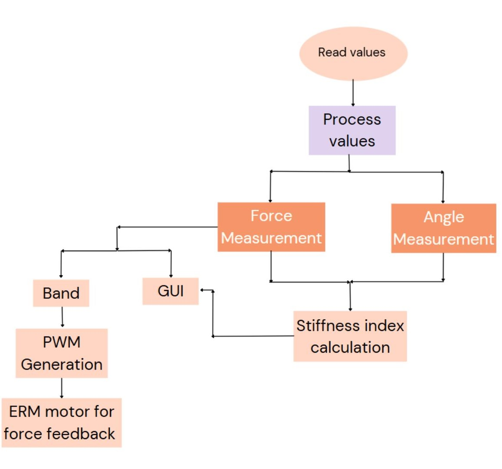
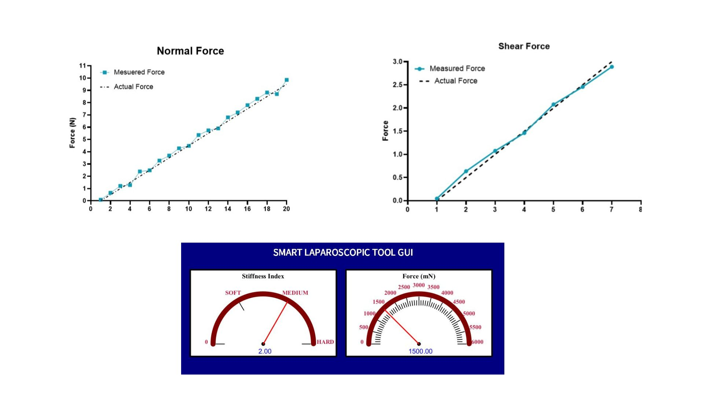
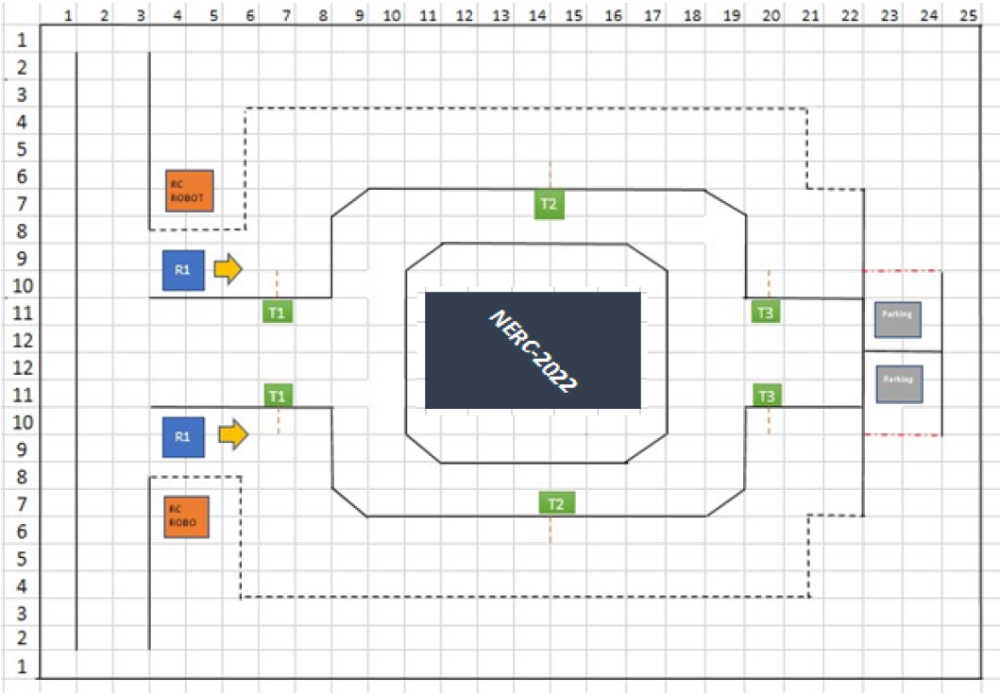
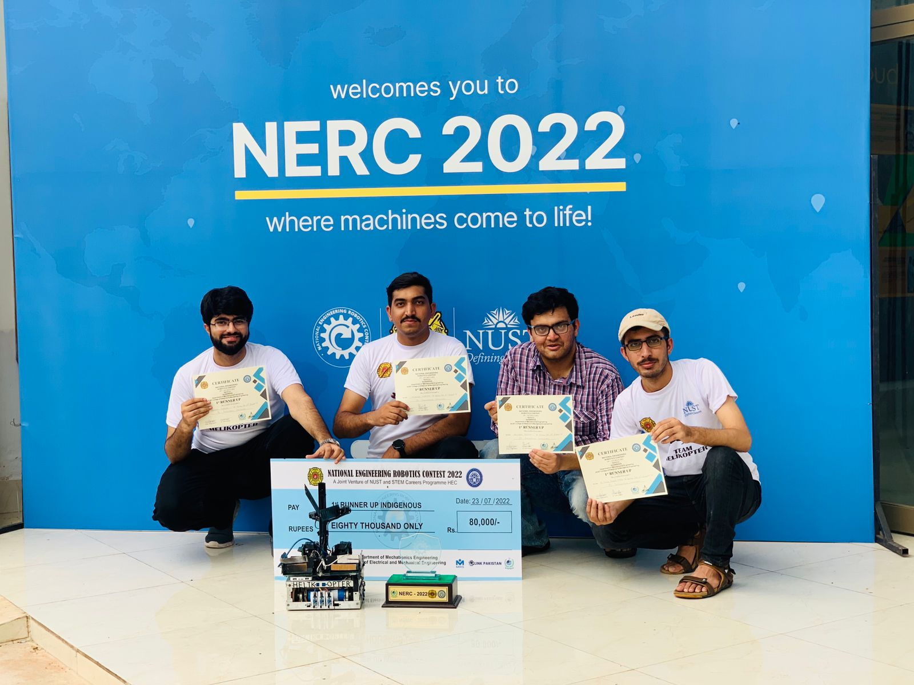
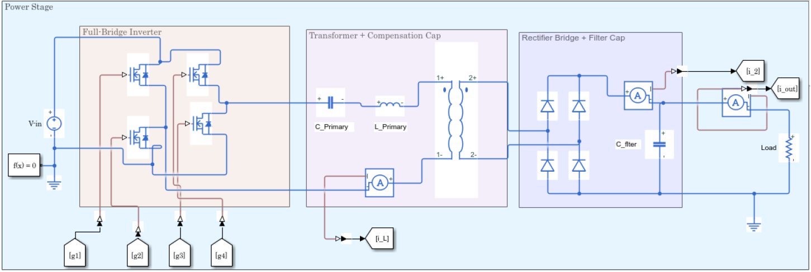
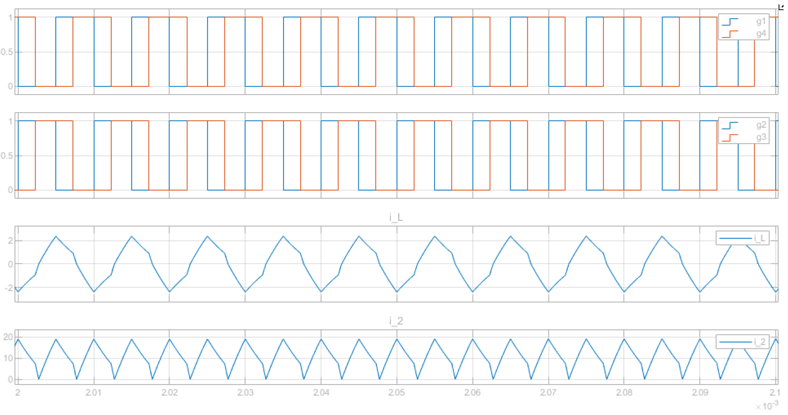
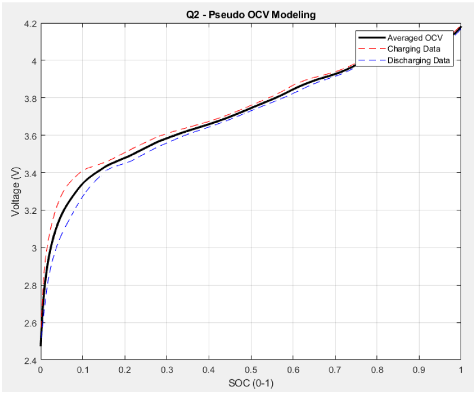

Controls and Automation Engineer specializing in embedded sensing, power electronics modeling, and BAS/HVAC control logic. I design practical engineering solutions by integrating embedded systems, data acquisition, and system-level modeling using MATLAB/Simulink and modern sensor technologies.
Force Sensing Surgical Instrument for Robotic Surgery
Tools Used
COMSOL
Arduino
Proteus
EasyEDA
SolidWorks
Ansys
Skills Used
PCB Development
Sensor Designing
CAD Modeling
ESP32 Programming
Calibration
DAQ Systems
Wireless Feedback
Signal Processing
Situation
Laparoscopic and robotic minimally invasive surgery is performed through small incisions using
long, slender instruments. Although this reduces patient trauma, surgeons lose natural haptic
feedback because these instruments isolate their hands from the tissue. This creates challenges
in sensing applied forces and assessing tissue stiffness, increasing the risk of accidental tissue damage.

Task
The objective was to design a smart laparoscopic tool that provides real-time haptic feedback to
surgeons. This required developing an integrated sensing system capable of measuring both normal
and shear forces using a flexible capacitive sensor, and estimating tissue stiffness using a
position/angle sensor. The task also included creating a compact data acquisition board, wireless
feedback mechanism (wearable band), and mechanical integration into a functional surgical grasper.
Action
Designed and fabricated a flexible capacitive force sensor and integrated it into a laparoscopic grasper.
Developed the complete DAQ system using ESP32, AD7746, ADS1115, and AS5600 sensors. Built calibration
setups, mapped capacitance to force, and performed simulations for normal and shear measurement.
Redesigned the tool mechanism for safe sensor placement and implemented wireless haptic feedback
using a wearable band and custom motor driver circuitry.
Result
Achieved accurate measurement of force and stiffness with errors less than eight percent. Delivered a
complete working prototype with real-time wireless sensing and haptic feedback. The project was
selected for national innovation competitions including FICS and Ignite.

Autonomous Fruit Plucking Robot - NERC Robotics Competition
(Team Lead)
Tools Used
SolidWorks
Arduino
Proteus
Ansys
Skills Used
PCB Development
Sensor Integration
CAD Modeling
Arduino Programming
Signal Processing
Situation
The NERC Indigenous Robotics Category required a fully autonomous mobile robot to navigate a themed arena,
locate fruit trees, pluck ping-pong ball “fruits,” and collect them in a specified sequence. The rules enforced strict size limits and prohibited prefabricated driver modules, demanding an
indigenous mechanical design, custom electronics, and reliable autonomous navigation.

Task
As team lead, my task was to design, build, and program an autonomous fruit-harvesting robot from scratch.
This included creating a mechanical plucking system, developing custom motor driver circuitry, implementing
sensor-based navigation and line following, and coordinating the full integration so the robot could
consistently pluck fruits from different trees and deliver them to the collection area within the time limit.
Action
I led the mechanical design of the robot chassis and plucking mechanism, using servos and linkages to grip
and release the fruits. I designed and assembled an H-bridge based motor driver for the DC drive motors to
comply with the indigenous hardware rules. On the software side, I programmed the Arduino in C to read
multiple IR sensors, perform line following, detect tree positions, and trigger plucking and dumping
sequences. I integrated the motion routines with servo control for the arm and container, and iteratively
tested and tuned timing, speed, and sensor thresholds to achieve stable performance in the arena.
Result
The robot successfully navigated the arena, plucked fruits from the required trees, and transferred them to
the collector robot with high repeatability during trials. Our team’s robot met the competition constraints
and performed reliably under time pressure, earning a first runner-up position at NERC and demonstrating our
ability to deliver a complete autonomous mechatronic system.

Single Active Bridge (SAB) VS Dual Active Bridge (DAB) Analysis
Tools Used
MATLAB Simulink
Skills Used
DC-DC Converter Design
Phase-shift control implementation
CCM/DCM operation analysis
Power electronics modelling
Situation
Isolated DC–DC converters are essential in EV chargers and energy-storage systems. Two topologies, Single Active Bridge (SAB) and Dual Active Bridge (DAB), offer different trade-offs in complexity, soft-switching behavior, and bidirectional power flow. A comparative study was needed to understand which is better for high-power applications.

Task
Model and simulate both converters in MATLAB/Simulink, evaluate their performance under varying load conditions, and compare efficiency, current stress, and soft-switching capability to guide topology selection.
Action
Built detailed SAB and DAB converter models with phase-shift control, simulated their operation in CCM and DCM, analyzed switching waveforms, transformer utilization, and power transfer characteristics, and documented performance differences through controlled test cases.
Result
Showed that SAB is simpler and cost-effective but limited in soft-switching range, while DAB provides higher efficiency and full bidirectional power flow, making it better suited for EV and energy-storage systems. Delivered validated comparison models and clear design insights.

Battery Fuel Gauge Modeling in MATLAB
Tools Used
MATLAB
Skills Used
Battery modelling
Numerical integration
SOC estimation algorithms
Internal resistance estimation
Data processing and interpolation
Signal analysis and plotting
Battery management system concepts
Situation
Modern battery powered systems rely on accurate estimation of internal battery states for safe and reliable
operation. States such as state of charge, internal resistance, and remaining runtime cannot be measured
directly and must be inferred from voltage and current data through a software based battery fuel gauge.
Task
The task was to implement a complete battery fuel gauge model in MATLAB using experimental voltage, current,
and time data. This included estimating battery capacity, generating a pseudo OCV curve, creating a
voltage based SOC lookup, estimating internal resistance, computing SOC through Coulomb counting, and
predicting time to shutdown under a given load profile.
Action
Implemented numerical integration of current to estimate charge and discharge capacity. Constructed an
averaged pseudo OCV curve by combining charging and discharging characteristics and used it to build a
voltage based SOC lookup. Estimated internal resistance from voltage steps during current pulses and
implemented Coulomb counting for SOC tracking with clipping for stability. Finally, combined SOC,
internal resistance, and cutoff voltage to estimate remaining time to shutdown, and visualized all
intermediate and final results using MATLAB plots.

Result
Delivered a working MATLAB based battery fuel gauge capable of estimating capacity, SOC, internal resistance,
and remaining runtime from only voltage and current measurements. The model reproduced expected battery
behaviour across the data set and demonstrated how software algorithms inside a battery management system
can infer hidden battery states from measurable signals.
Front Store Supervisor (Part-Time) — Shoppers Drug Mart, Windsor
July 2024 – Present
Oversee daily front store operations in a high-traffic retail environment, coordinating cashiers, floor staff, and customer service to keep queues moving smoothly.
Handle cash management tasks including end-of-day reconciliation, resolving till discrepancies, and preparing reports for the management team.
Support the in-store post office counter, processing parcels, bill payments, and other postal services while maintaining accuracy and compliance with procedures.
Train and mentor new team members on point-of-sale systems, customer interaction, and store standards, helping them become productive quickly.
Resolve customer issues calmly and professionally, balancing store policies with practical solutions to maintain a positive customer experience.
Prioritize and delegate tasks such as facing, restocking, and promotional setups to keep the store organized and ready for peak hours.
Controls Engineer — Blue Sky Automation, Lahore
September 2023 – March 2024
Worked on HVAC and Building Automation System (BAS) projects using Niagara N4, focusing on AHUs, VAVs, chillers, and zone-level temperature control sequences.
Designed and modified control logic, schedules, alarms, trends, and operator interfaces within Niagara N4 for remote BAS deployments.
Developed graphics dashboards and equipment views to visualize HVAC system performance, device status, and sensor readings.
Integrated BACnet and Modbus devices in software by adding points, configuring network parameters, and validating device communication through station testing.
Assisted senior engineers with remote system checks, functional testing, and verifying logic execution through simulation and N4 live values.
Troubleshot software-side issues including communication dropouts, incorrect point mapping, logic conflicts, and device configuration mismatches.
Prepared documentation including device lists, point lists, mapping sheets, and update logs to support handover and long-term maintenance.
Undergraduate Research Student — NUST, Pakistan
2022 – 2023
Worked in the Micro and Nano Robotics laboratory on a research project focused on developing flexible capacitive force and tactile sensing systems for minimally invasive and robotic surgery.
The project was part of an internationally funded PAK-UK Innovative & Collaborative Research Grant (ICRG), titled
“Development of Nanomaterials-Based Tactile Sensors for Tele-Manipulation in Robotic Surgery.”
Assisted in designing multi-layer flexible sensor structures and evaluating different material stacks and geometries to sense both normal and shear components of force.
Helped develop the data acquisition pipeline using microcontrollers and sensor-interface ICs (AD7746, ADS1115, AS5600), contributing to PCB design, prototyping, and initial testing.
Conducted calibration experiments using controlled loads and a precision force gauge, processed large datasets, and generated calibration curves, error estimates, and response plots.
Supported mechanical integration of the sensor into prototype laparoscopic tools by working with CAD models to ensure proper placement, alignment, and load transfer for accurate sensing.
Analyzed raw capacitance and force data, implemented filtering and interpolation methods, and validated sensor behavior across normal and shear loading conditions.
Contributed to technical reports and presentations summarizing experimental methodology, simulation results, and potential applications in robotic-assisted surgery and haptic feedback systems.
Maintenance Intern — Atlas Honda, Sheikhupura
September 2021 – October 2021
Observed and learned production processes across multiple areas of the plant including casting, engine machining and assembly, paint shop, heat treatment, fuel tank welding, and frame assembly.
Shadowed the maintenance team on routine inspections and breakdown maintenance of conveyor systems, cooling lines, and other critical equipment.
Worked on the concept and basic design of a cooling conveyor control system using PLC, HMI, temperature sensors, and variable frequency drives to stabilize product cooling.
Reviewed existing control panel layouts, wiring practices, and safety interlocks, gaining familiarity with industrial standards and shop-floor practices.
Assisted with simple troubleshooting tasks under supervision, such as checking sensor placement, verifying signal status, and observing VFD parameter adjustments.
Documented observations and prepared a brief summary report capturing process flow, bottlenecks, and potential areas where automation or control improvements could help.
Education
Master of Engineering (M.Eng.) — Electrical & Computer Engineering
University of Windsor, Canada — 2023 to 2025
Focused on power electronics, energy storage systems, automotive sensors, and computational engineering.
Consistently earned high academic standing with a cumulative GPA of 91.25% and received Honour Roll Distinction.
Developed strong analytical and modeling skills applicable to automation, energy systems, embedded control, and advanced engineering design.
Graduate Courses
Engineering Technical Communications
Engineering Mathematics
Engineering Project Management
Computational Methods & Modeling for Engineering
Advanced Energy Storage Systems
EV Power Conversion
Automotive Sensor Systems
Power Systems II
Bachelor of Engineering (B.E.) — Mechatronics Engineering
National University of Sciences and Technology (NUST), Pakistan — 2018 to 2022
Developed a strong foundation in robotics, control systems, embedded electronics, sensors, automation, and mechanical system design.
Conducted undergraduate research as part of a prestigious PAK-UK ICRG-funded international project on nanomaterial-based tactile sensors for tele-manipulation in robotic surgery.
Completed major engineering projects including an autonomous fruit-plucking robot (NERC) and advanced power electronics simulations.
Gained hands-on experience with embedded systems, control logic, mechanical design, and sensor integration.